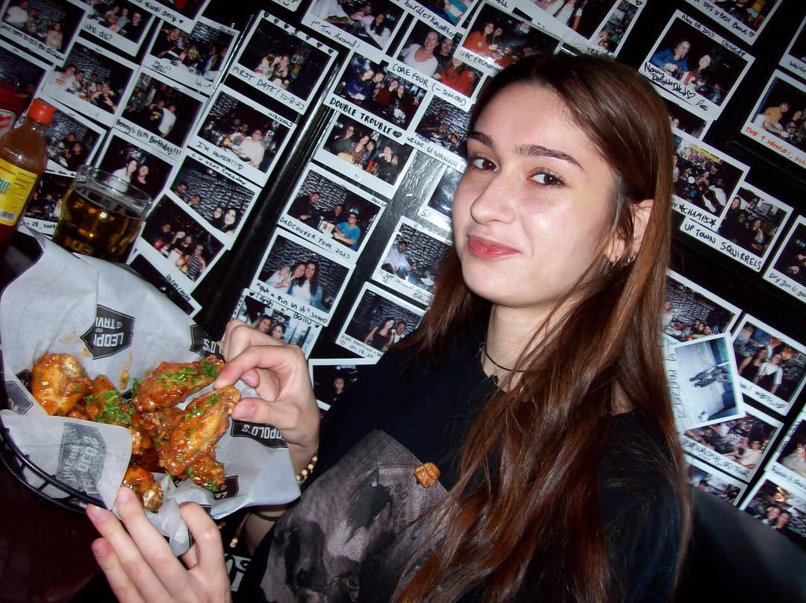

As someone who is self-taught, I have developed and honed my technical abilities through hands-on projects with various clients as a self-employed, freelance programmer and developer, in addition to continuous self-taught learning.
Some tools and platforms I use frequently include Git, GitHub, Kaggle, LeetCode, Tableau, VS Code, Jupyter Notebooks, Bootstrap...
I may not have a traditional university background, although that has not stood in the way of being able to cultivate an extensive understanding of programming languages; JavaScript, HTML, CSS, Python, SQL. In addition to libraries and frameworks such as; CSS, Matplotlib, NumPy, Pandas, TensorFlow, Keras, Decision Trees, CNN, PyGame, the list goes on.
To develop, or program is to design and create. As someone who loves the arts, I am always excited to incorporate the fine arts into my work. Through web, mobile application, and game development, I have been able to focus in greater detail on the UI part of programming, allowing me to explore more creative ideas when it comes to developing.
With all of the above having thrived in a self-directed learning environment, I am adept at quickly grasping new concepts and technologies. With technical proficiency as well as a strong work ethic and adaptability, many things are possible.
Moreover, my experience as a self-employed individual has instilled in me a sense of responsibility, resourcefulness, and initiative, which I believe are crucial traits for success in any role.
